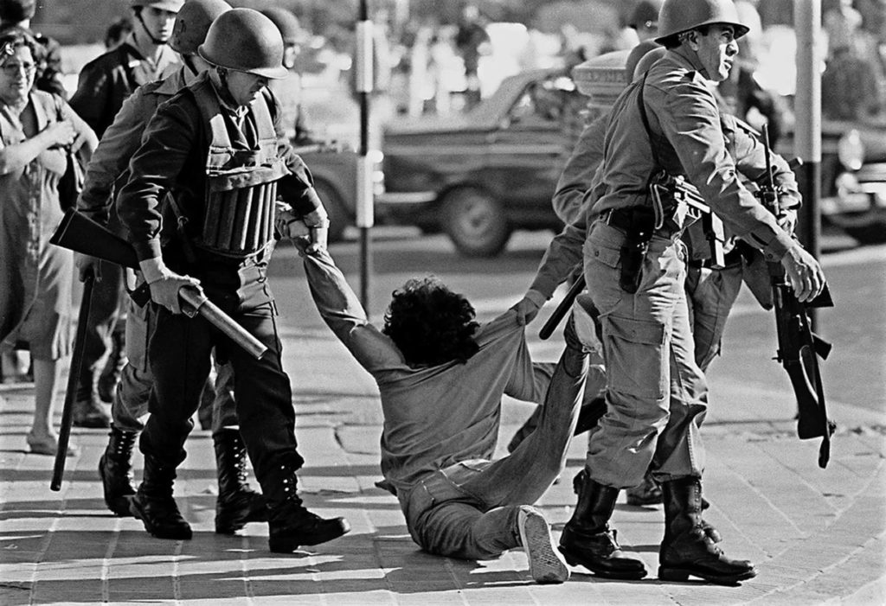
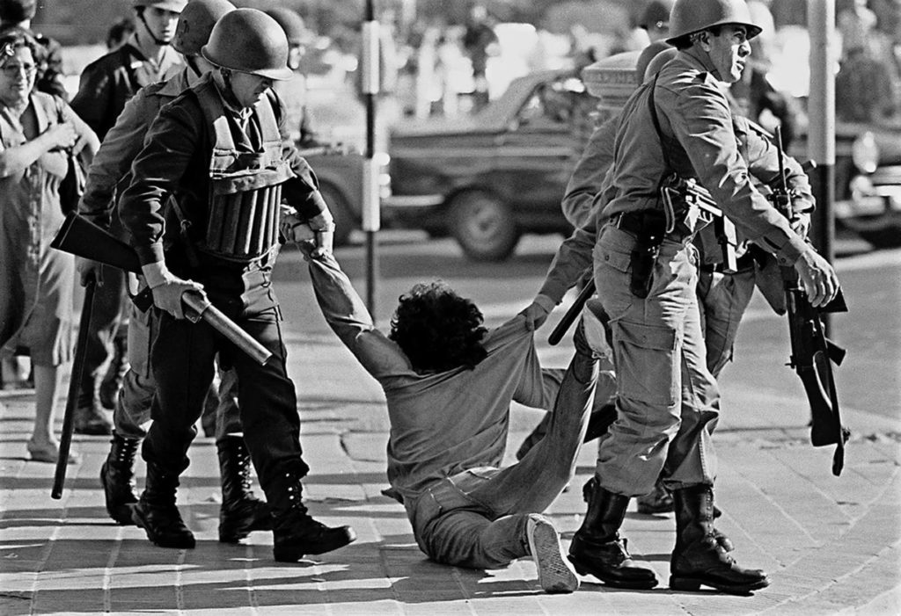
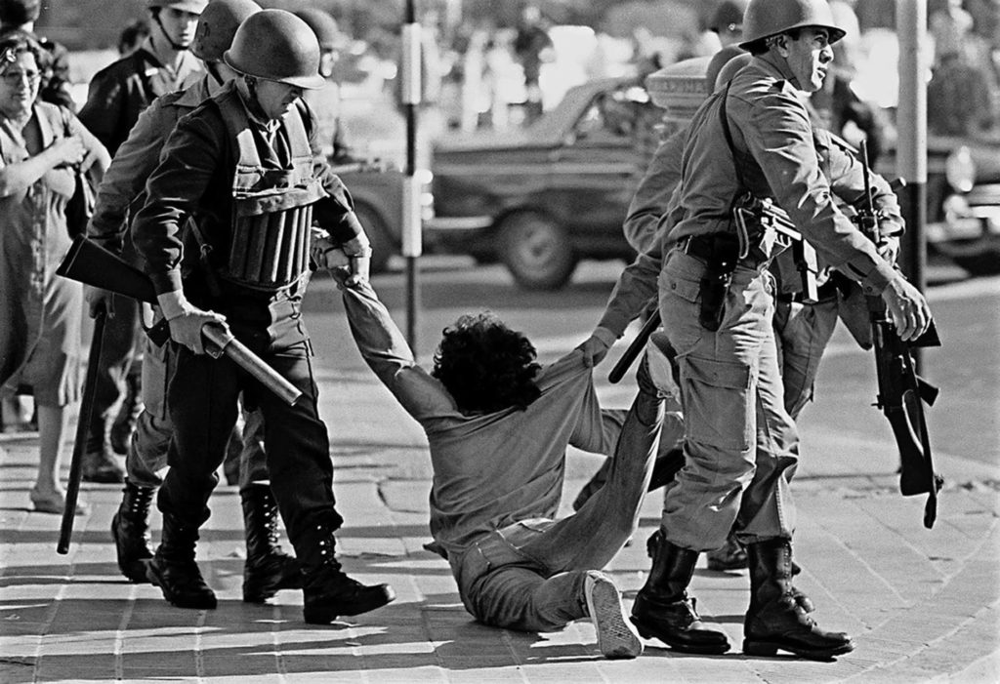
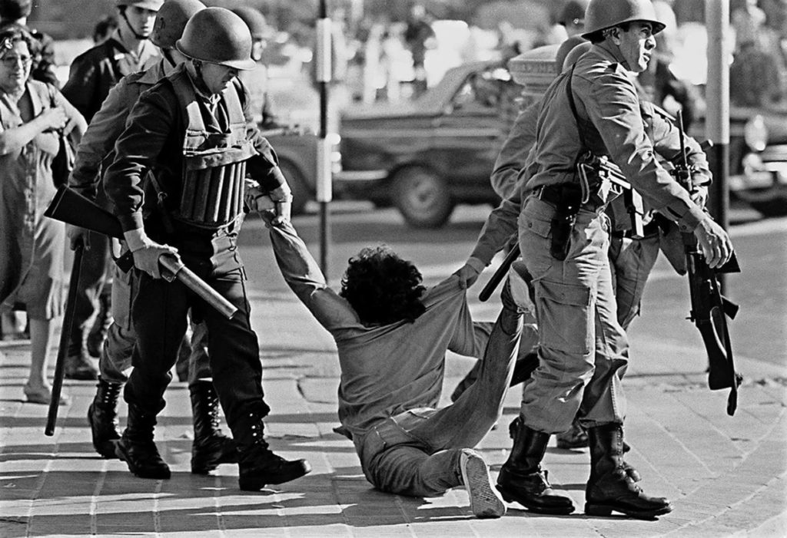

Contexto histórico da Ditadura Militar
Antes de entendermos a relação entre a MPB e as músicas de protesto, é essencial compreender o que foi esse momento histórico na política brasileira. A origem da Ditadura Militar no Brasil se deu em meio a uma crise política e social, marcada pela polarização entre grupos de esquerda e de direita. Em 1964, um golpe militar depôs o presidente João Goulart e instaurou um governo autoritário, apoiado por setores conservadores e empresariais. Os militares, liderados por Castelo Branco, justificaram o golpe como uma ação contra a ameaça comunista e pela segurança nacional. Nos primeiros anos, houve intensa repressão política: prisões, exílios, censura à imprensa e às artes.
A censura à música durante a ditadura
A censura foi uma das principais formas de repressão do regime, e a música era um dos alvos mais visados. Órgãos governamentais analisavam previamente letras e melodias para impedir mensagens consideradas subversivas. O principal órgão responsável era o Departamento de Censura de Diversões Públicas (DCDP), subordinado ao Ministério da Justiça. Esse departamento examinava obras artísticas como músicas, filmes, peças teatrais e programas de TV. As músicas vetadas não podiam ser tocadas em rádios, TVs ou shows públicos. Artistas que desobedecessem podiam ser presos ou sofrer retaliações.
Resistência artística
Apesar da censura, muitos artistas da MPB resistiram e encontraram formas criativas de expressar críticas ao regime. A música tornou-se uma ferramenta de mobilização popular e de luta pela redemocratização do país.
Quais características da Ditadura Militar a MPB criticava?
As críticas da MPB à ditadura militar eram variadas, mas geralmente abordavam temas como a censura, a tortura, a perseguição política, a repressão e a falta de liberdade de expressão e democracia. Aqui estão algumas das principais críticas da MPB à ditadura militar:
- Censura: Já citada anteriormente, a censura era uma das principais formas de repressão do regime, e muitas músicas da MPB foram censuradas e/ou proibidas de serem tocadas. As músicas que falavam diretamente da repressão ou que criticavam o regime eram particularmente visadas.
- Tortura: A tortura era uma prática comum por parte dos líderes da ditadura militar para obter informações e controlar a oposição. Muitas músicas da MPB falavam da dor e do sofrimento causados pela tortura e pediam o fim desta prática.
- Antidemocracia: A ditadura militar era um regime autoritário que negava os direitos democráticos da população. Muitas músicas da MPB pediam a volta da democracia e o fim da ditadura.